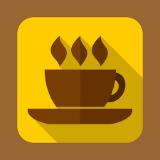
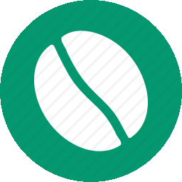

 FreshBrew 
{{cafe.name}}
{{cafe.distance | number:"0"}}m
{{cafe.location.display_address| join:", "}}
{{cafe.rating}} {{cafe.review_count}}
{{cafe.distance | number:"0"}}m
{{cafe.location.display_address| join:", "}}
{{cafe.rating}} {{cafe.review_count}}